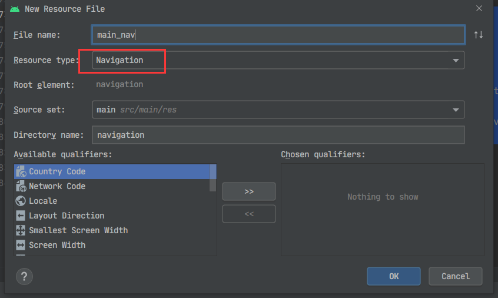
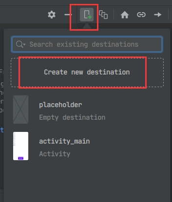
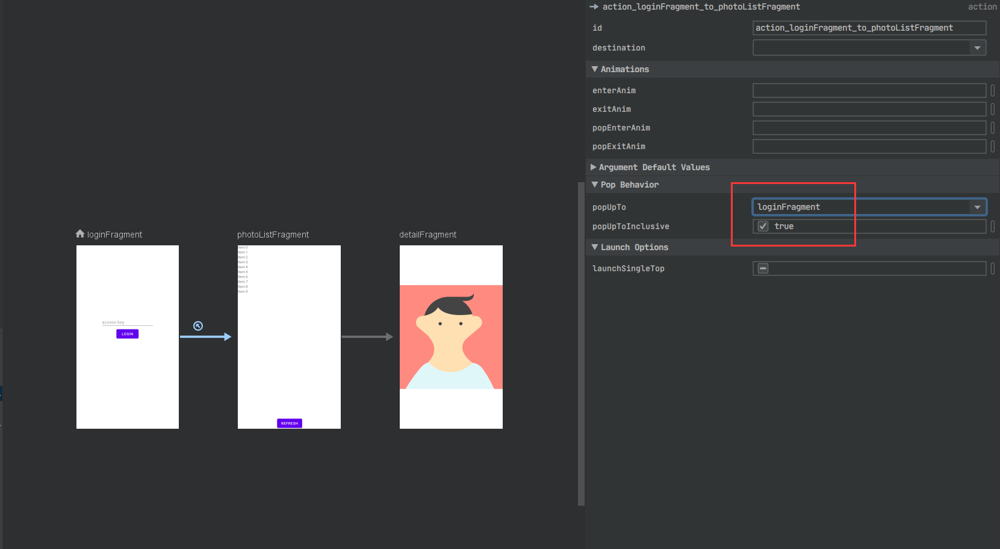
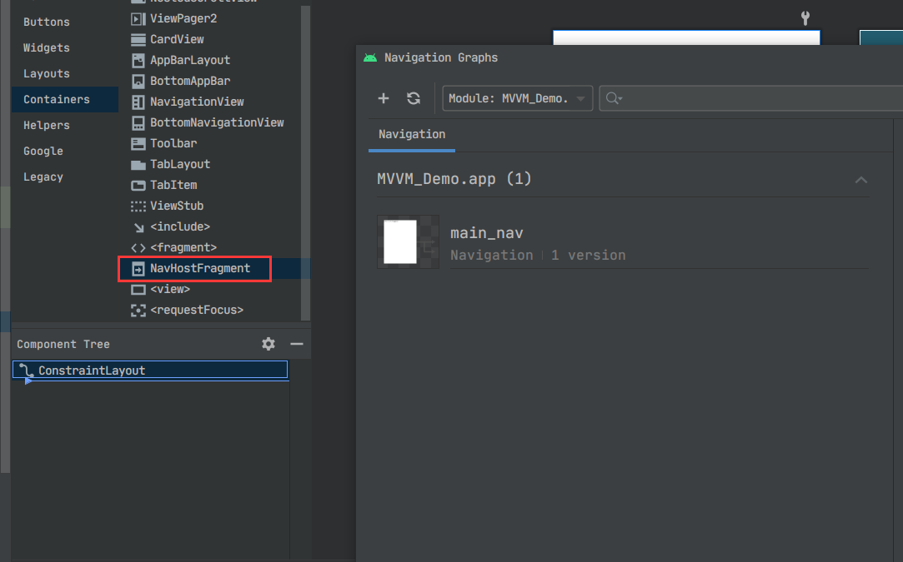
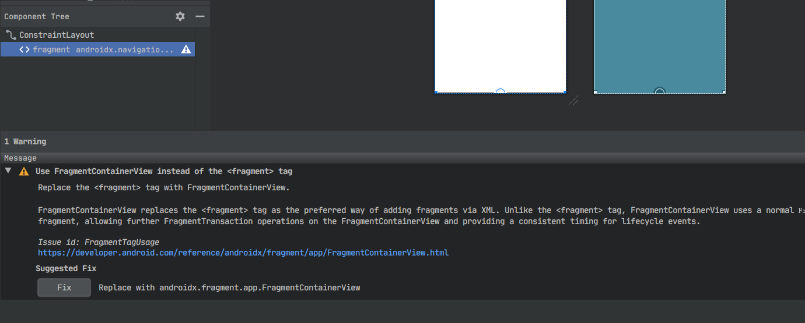
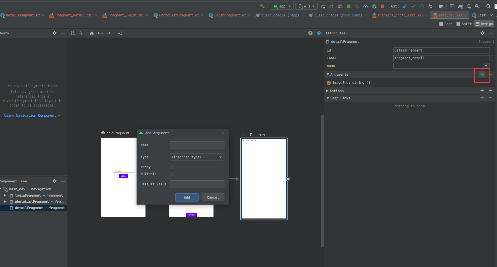

kotlin & android 笔记
λ：
navigation 组件 是 Android Jetpack重要组成部分，推出3年左右，2018谷歌I/O大会也曾介绍过。主要用于组织Fragment，通过Fragment来实现不同内容片段的显示。包括同级之间切换，不同级之间跳转(如 列表item跳详情页)，代替以往跳转Activity的方式，推出单Activity模式。
与Activity相比好处：
- 拿到同一份
Activity ViewModel。ViewModel以Activity为单位共享，同一Activity下的Fragment可以拿到同一份ViewModel，所以如果直接跳转Activity数据共享要自己解决，传递或者全局缓存里取，同时还要考虑副本一致性，也就是我在一个页面修改数据，其他用到此数据的页面也应该同步修改。
flutter Navigator1.0里以Route组织页面，用Provider插件实现状态管理时，除非把Provider包在的MaterialApp的外层，否则，跳转其他Route就无法通过Provider.of(context)获取，数据处理就如同Android Activity, 包在最外层好使是因为MaterialApp生成时会构造一个Navigator来组织所有页面。通过List<_RouteEntry> _history和GlobalKey<OverlayState> _overlayKey保存信息。所以所有页面都是MaterialApp的子节点。最近的
flutter 1.22推出Navigator2.0, 可以用List<Page<dynamic>> pages组织页面，也就类似Android navigation组件，flutter Page好比Android Fragment
导航图可以靠可视化工具拖框完成。每一个页面称作“目的地”， 通过之间连线、设置参数来实现页面跳转约束，同时可以设置过渡动画等。所有导航资源存在资源文件夹下的
navigation文件夹里。也支持Kotlin DSL代码完成导航设置。Safe Args传递数据。Safe Arges 官网地址。保证安全的传递数据。
有句话： “通常情况下，强烈建议您仅在目的地之间传递最少量的数据。例如，您应该传递键来检索对象而不是传递对象本身，因为在 Android 上用于保存所有状态的总空间是有限的。”, 这同样适用于
flutter。在flutter里并没有太好的副本一致性方案，所以我在Bean也就是数据解析时做了缓存，同一数据只会构造一次，之后全从缓存中取或者更新。利用factory构造函数将数据缓存、生成、更新、获取等操作隐形，达到简单的Loc的效果。(TODO: 有空再总结)
需要注意：
- 系统返回按钮和事件的处理。跳转
Fragment时，要拦截并设置好Activity的返回按钮事件，否则整个Activity就关闭了。同时其他组件的状态更新也需要自己维护, 参考：使用 NavigationUI 更新界面组件
这个问题在
flutter Navigator2.0里同样存在。
- 同级
Fragment切换需要重新构建，并不记录状态。通过把当前的FragmentManager交给navigation来实现页面切换时，每切换一次都要重建Fragment。
demo: 添加登录页，详情页
从之前demo继续开发。
1 | # android navigation demo |
1. 导入
使用入门 官网地址
如果用Safe Args则要在最顶层引入插件，或者用Bundle代替Safe Args实现传递
1 | // project gradle |
1 | // module gradle |
2. 导航图与目的地
参考 设计导航图 和 条件导航（官网地址）。
添加新的android resource, 类型选择Navigation, 同时会生成navigation目录。

点击添加新的目的地(Fragment), 如果已经存在，列表里会显示。注意一定要以Fragment为单位

添加3个目的地。 LoginFragment在登录成功后会由PhotoListFragment取代，因此要设置popUpTo参数。参考导航到目的地
每一条导航规则都有自己的id。 用于NavController.navigate实现跳转。
LoginFragment为起始目的地，名字前会显示“主页”图标。

2. 为Activity添加NavHost
在layout文件中添加NavHostFragment, 同时会报一个警告⚠，提示用FragmentContainerView作为Fragment容器。点击Fix应用该建议。


3. 登录功能及Activity目的地切换
此时app已经可以启动了，会显示起始目的地也就是LoginFragment。
demo用到的https://api.unsplash.com/实际只需要access_key, 所以登录页只需要一个输入框和登录按钮。点击登录时会请求列表，若成功则替换为PhotoListFragment页。
1 |
|
参考导航到目的地, 用NavHost的NavController来实现目的地跳转。
参考使用 NavigationUI 更新界面组件，设置顶部appBar和系统返回事件相应
1 | // MainActivity |
4. 点击图片进入详情页，利用Safe Args传递图片链接
参考在目的地之间传递数据, 在导航图编辑页面可视化编辑要传递的参数。
SpecifyAmountFragmentDirections, ConfirmationFragmentArgs为插件自动生成，可在java(generated)目录找到

1 | //PhotoListFragment 跳转逻辑 |
如果使用-ktx版本，可以用by navArgs()来获取传递的参数
1 | // DetailFragment |